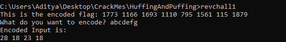
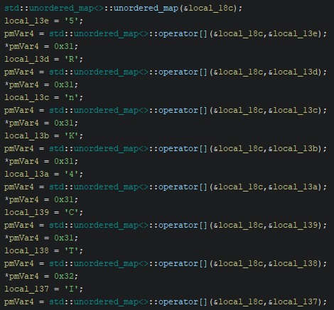
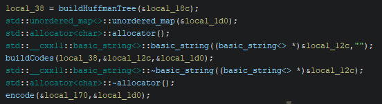
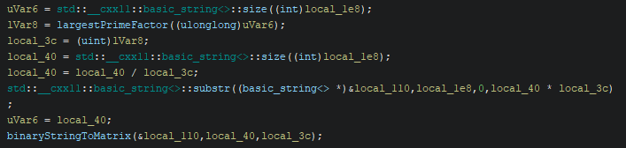
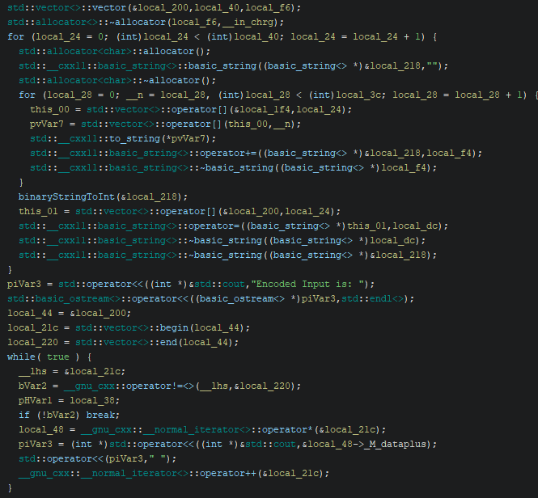
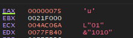
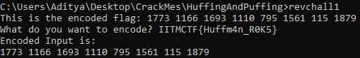

Introduction
When we run this program, it shows us the encoded flag, we pass the a string into the encoder, and get our input but encoded. The goal of this challenge seems to be to get the encoded flag and the encoded input to match by passing the original flag into the program.
So let's open up Ghidra and figure out how this works!
Code Structure
We should get dropped into main. And if we look past the code where the input is captured, we can see;
A giant dictionary is made,
The input string then is encoded with a Huffman tree,
The encoded string is then converted into a rectangular binary matrix with width equal to the largest prime factor of the encoded string (filling it column by column),
And finally, each column of the matrix is printed an integer.
Huffman Tree
The crux of this challenge is the Huffman tree, if you don't know what that is you can read more about it here.
But the gist of it that the Huffman tree creates binary codes that replace each character in a string based on frequency.
And from the function header of the buildHuffmanTree function, we know that the giant dictionary is actually the frequency map for the tree
This is the full map with the keys being the charcters, and the values being frequency of them in the flag
'5' -> 0x31
'R' -> 0x31
'n' -> 0x31
'K' -> 0x31
'4' -> 0x31
'C' -> 0x31
'T' -> 0x32
'I' -> 0x32
'0' -> 0x31
'u' -> 0x31
'F' -> 0x31
'M' -> 0x31
'{' -> 0x31
'_' -> 0x31
'H' -> 0x31
'}' -> 0x31
'f' -> 0x32
'm' -> 0x31
Let's assume that they don't actually use each character at least 49 times in the flag, and that they meant the ASCII codes for the numbers.
That leaves us with
'5' -> 1
'R' -> 1
'n' -> 1
'K' -> 1
'4' -> 1
'C' -> 1
'T' -> 2
'I' -> 2
'0' -> 1
'u' -> 1
'F' -> 1
'M' -> 1
'{' -> 1
'_' -> 1
'H' -> 1
'}' -> 1
'f' -> 2
'm' -> 1
Or the characters: 5RnK4CTTII0uFM{_H}ffm
From here we could brute force the flag with some guessing and knowledge of common CTF flag syntax. But that sounds annoying and against the spirit of the challenge, so let's actually decode the flag.
Flag Decoding
The last piece of info we need are the codes generated by the Huffman tree. We can't simply run frequency map into an algorithm implementation that we've made ourselves as the codes would be slightly different depending on the compilation due to having so many characters with the same frequency. So we need to get the codes from the program itself.
To do this I attached x32Dbg onto the program and bp'd at file offset (insert offset here), and got the code for each character from EDX
Doing this for each character we should get the codes:
R -> 0000
n -> 0001
M -> 0010
C -> 0011
F -> 0100
5 -> 0101
m -> 0110
} -> 0111
H -> 1000
_ -> 1001
u -> 1010
T -> 1011
f -> 1100
I -> 1101
0 -> 11100
{ -> 11101
4 -> 11110
K -> 11111
Ok now to for real start decoding the flag.
We can start by reverting the encoded flag back into binary
1773 1166 1693 1110 795 1561 115 1879
11011101101 10010001110 11010011101 10001010110 1100011011 11000011001 1110011 11101010111
But an important thing to remember is that these binary numbers originally came from the columns of a rectangular matrix. So that means each one of these binary numbers should be the same length.
We can pad zeros on the front of shorter numbers to make them equally sized.
11011101101 10010001110 11010011101 10001010110 01100011011 11000011001 00001110011 11101010111
We then can treat this as one string and break it up into the codes
1101110110110010001110110100111011000101011001100011011110000110010000111001111101010111
1101 1101 1011 0010 0011 1011 0100 11101 1000 1010 1100 1100 0110 11110 0001 1001 0000 11100 11111 0101 0111
Finally we get the flag by translating the codes back into ASCII using the code table that we found
I I T M C T F { H u f f m 4 n _ R 0 K 5 }
IITMCTF{Huffm4n_R0K5}
